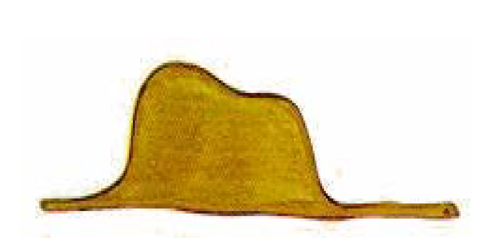

1
Once when I was six years old I saw a magnificent picture in a book, called True Stories from Nature, about the primeval forest. It was a picture of a boa constrictor in the act of swallowing an animal. Here is a copy of the drawing.

Description of the image: A long, strong and orange Boa Snake is cleverly coiling up a gray and purpure animal. Ominously and imminently, the Boa is about to engulf its prey, which is looking at it in terror.
In the book it said: “Boa constrictors swallow their prey whole, without chewing it. After that they are not able to move, and they sleep through the six months that they need for digestion.” I pondered deeply, then, over the adventures of the jungle. And after some work with a colored pencil I succeeded in making my first drawing. My Drawingm Number One. It looked like this:
Description of the image: A brown and very elongated Boa snake has engulfed its prey, which is inside its body causing a great width in it. The body of the viper is so tall because of the animal it has eaten that its shape looks like a simple light brown hat.
I showed my masterpiece to the grown-ups, and asked them whether the drawing frightened them. But they answered: “Frighten? Why should any one be frightened by a hat?” My drawing was not a picture of a hat. It was a picture of a boa constrictor digesting an elephant. But since the grown-ups were not able to understand it, I made another drawing: I drew the inside of the boa constrictor, so that the grown-ups could see it clearly. They always need to have things explained. My Drawing Number Two looked like this:

Image description: A large, gray elephant looms in what appears to be the transparent interior of the boa.
The grown-ups’ response, this time, was to advise me to lay aside my drawings of boa constrictors, whether from the inside or the outside, and devote myself instead to geography, history, arithmetic and grammar. That is why, at the age of six, I gave up what might have been a magnificent career as a painter.
I had been disheartened by the failure of my Drawing Number One and my Drawing Number Two. Grown-ups never understand anything by themselves, and it is tiresome for children to be always and forever explaining things to them.
So then I chose another profession, and learned to pilot airplanes. I have flown a little over all parts of the world; and it is true that geography has been very useful to me. At a glance I can distinguish China from Arizona. If one gets lost in the night, such knowledge is valuable.
In the course of this life I have had a great many encounters with a great many people who have been concerned with matters of consequence. I have lived a great deal among grown-ups. I have seen them intimately, close at hand. And that hasn’t much improved my opinion of them.
Whenever I met one of them who seemed to me at all clear-sighted, I tried the experiment of showing him my Drawing Number One, which I have always kept. I would try to find out, so, if this was a person of true understanding. But, whoever it was, he, or she, would always say: “That is a hat.” Then I would never talk to that person about boa constrictors, or primeval forests, or stars. I would bring myself down to his level. I would talk to him about bridge, and golf, and politics, and neckties. And the grown-up would be greatly pleased to have met such a sensible man.